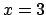
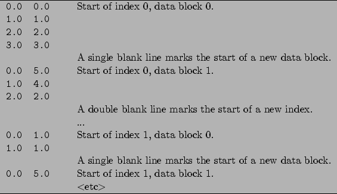
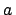
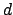
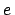
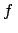

Next: 2.4 Directing Where Output Up: 2. First Steps With Previous: 2.2 First Plots Contents Index
In the simple example of the previous section, we plotted the first column of a datafile against the second. It is also possible to plot any arbitrary column of a datafile against any other; the syntax for doing this is:
plot 'datafile' using 3:5
This example would plot the fifth column of the file datafile against the third. As mentioned above, columns in datafiles can be separated using whitespace and/or commas, which means that Pyxplot is compatible both with the format used by gnuplot, and also with comma-separated-value (CSV) files which many spreadsheets produce. Algebraic expressions may also be used in place of column numbers, for example:
plot 'datafile' using (3+$1+$2):(2+$3)
In algebraic expressions, column numbers should be prefixed by dollar signs, to distinguish them from numerical constants. The example above would plot the sum of the values in the first two columns of the datafile, plus three, on the horizontal axis, against two plus the value in the third column on the vertical axis. A more advanced example might be:
plot 'datafile' using 3.0:$($2)
This would place all of the datapoints on the line , drawing
their vertical positions from the value of some column  in the datafile,
where the value of
in the datafile,
where the value of  is itself read from the second column of the datafile.
is itself read from the second column of the datafile.
Later, in section 3.3, I shall discuss how to plot rows of datafiles against one another, in horizontally arranged datafiles.
It is also possible to plot data from only a range of lines within a datafile. When Pyxplot reads a datafile, it looks for any blank lines in the file. It divides the datafile up into ``data blocks'', each being separated by single blank lines. The first datablock is numbered 0, the next 1, and so on.
When two or more blank lines are found together, the datafile is divided up into ``index blocks''. Each index block may be made up of a series of data blocks. To clarify this, a labelled example datafile is shown in figure 2.1.
|  |
By default, when a datafile is plotted, all data blocks in all index blocks are plotted. To plot only the data from one index block, the following syntax may be used:
plot 'datafile' index 1
To achieve the default behaviour of plotting all index blocks, the index modifier should be followed by a negative number.
It is also possible to specify which lines and/or data blocks to plot from within each index. For this purpose the every modifier is used, which takes six values, separated by colons:
plot 'datafile' every a:b:c:d:e:f
The values have the following meanings:
| Plot data only from every th line in datafile. | |
| Plot only data from every th block within each index block. | |
| Plot only from line onwards within each block. | |
|  | Plot only data from block onwards within each index block. |
| Plot only up to the th line within each block. | |
| Plot only up to the th block within each index block. |
Any or all of these values can be omitted, and so the following would both be valid statements:
plot 'datafile' index 1 every 2:3 plot 'datafile' index 1 every :::3
The first would plot only every other data point from every third data block; the second from the third line onwards within each data block.
A final modifier for selecting which parts of a datafile are plotted is select, which plots only those data points which satisfy some given criterion. This is an extension of gnuplot's original syntax, and is described in section 3.3.
Dominic Ford 2006-09-09